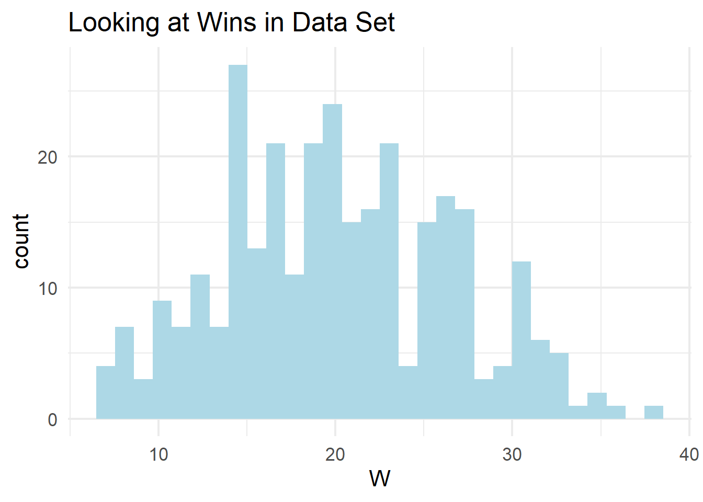
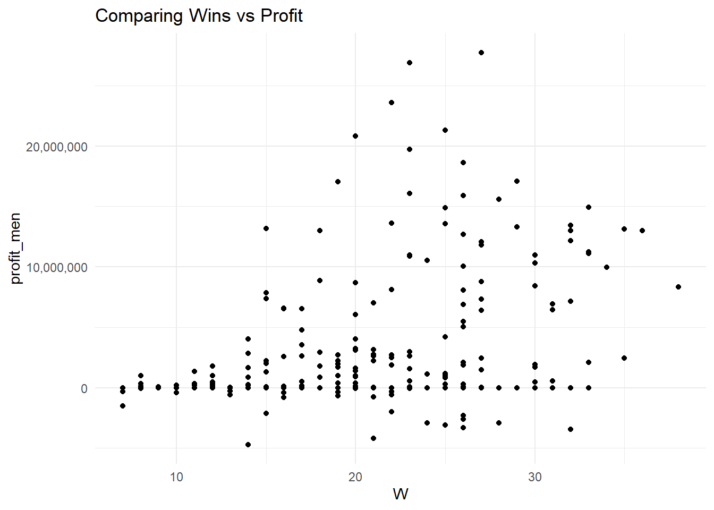
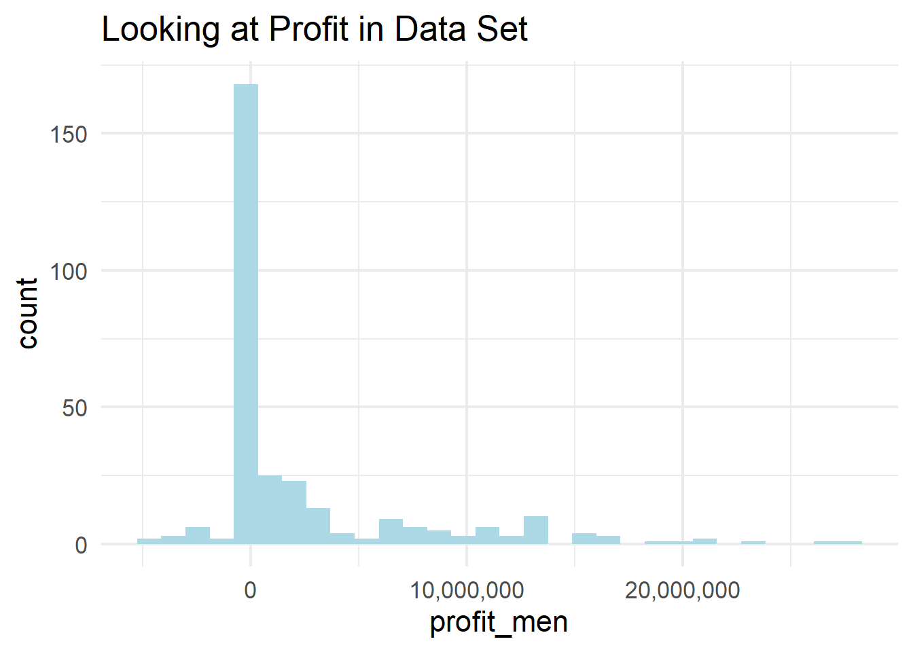

── Conflicts ────────────────────────────────────────── tidyverse_conflicts() ──
✖ dplyr::filter() masks stats::filter()
✖ dplyr::lag() masks stats::lag()
ℹ Use the conflicted package (<http://conflicted.r-lib.org/>) to force all conflicts to become errors
library(readr)library(stringr)library(fuzzyjoin)
Warning: package 'fuzzyjoin' was built under R version 4.4.3
library(plotly)
Warning: package 'plotly' was built under R version 4.4.3
Attaching package: 'plotly'
The following object is masked from 'package:ggplot2':
last_plot
The following object is masked from 'package:stats':
filter
The following object is masked from 'package:graphics':
layout
library(shiny)
Warning: package 'shiny' was built under R version 4.4.3
Rows: 132327 Columns: 28
── Column specification ────────────────────────────────────────────────────────
Delimiter: ","
chr (8): institution_name, city_txt, state_cd, zip_text, classification_nam...
dbl (20): year, unitid, classification_code, ef_male_count, ef_female_count,...
ℹ Use `spec()` to retrieve the full column specification for this data.
ℹ Specify the column types or set `show_col_types = FALSE` to quiet this message.
Rows: 353 Columns: 23
── Column specification ────────────────────────────────────────────────────────
Delimiter: ","
chr (3): TEAM, CONF, POSTSEASON
dbl (20): G, W, ADJOE, ADJDE, BARTHAG, EFG_O, EFG_D, TOR, TORD, ORB, DRB, FT...
ℹ Use `spec()` to retrieve the full column specification for this data.
ℹ Specify the column types or set `show_col_types = FALSE` to quiet this message.
Rows: 2102 Columns: 24
── Column specification ────────────────────────────────────────────────────────
Delimiter: ","
chr (3): TEAM, CONF, POSTSEASON
dbl (21): G, W, ADJOE, ADJDE, BARTHAG, EFG_O, EFG_D, TOR, TORD, ORB, DRB, FT...
ℹ Use `spec()` to retrieve the full column specification for this data.
ℹ Specify the column types or set `show_col_types = FALSE` to quiet this message.
This project analyzes a data set of college basketball teams, focusing on the relationship between financial performance (such as revenue, expenses, and profit) and on-court success, including wins and postseason outcomes. Using interactive visualizations built in a Shiny app, the analysis allows users to explore distributions and relationships across different conferences and years. Key findings suggest that while teams with higher profits and revenues often tend to perform better and advance further in the postseason, the relationship is not perfectly linear, indicating that financial resources alone do not guarantee success. Other factors, such as team performance metrics, also play a significant role in determining postseason advancement. Some teams during this period displayed large profit numbers, with less success (Louisville). While if you find any cinderella run in March Madness, their profit margin is extremely low compared to any power 5 team.
Introduction:
This project examines the relationship between financial performance and competitive success in Division I college basketball. The data set includes team-level information across multiple years (2015-2019), with variables such as total wins, games played, revenue, expenses, and calculated profit, along with postseason outcomes indicating how far each team advanced in the NCAA tournament. By combining financial and performance metrics, the data provide an opportunity to explore whether more financially successful programs also achieve greater success on the court.
The primary questions of interest in this analysis are: How are financial variables such as revenue and profit distributed across teams and conferences? Is there a relationship between a team’s financial resources and its regular season success, measured by wins? Do teams with higher profits or revenues tend to advance further in the postseason? and how do these relationships vary across conferences and years? Through interactive visualizations, this project aims to uncover patterns and assess whether financial strength is a meaningful predictor of basketball performance, while also highlighting the limitations of such a relationship.
Comparing teams who made the tournament versus those who did not
tourney_vs_no_tourney <- df |>group_by(in_tournament)tourney_plot <-ggplot(tourney_vs_no_tourney, aes(x = YEAR, y = profit_men, color = in_tournament,label = TEAM)) +geom_point() +geom_smooth(se =FALSE) +scale_y_continuous(labels = scales::comma) +labs(title ="Analyzing Teams in the Tournament vs not in Tournament" ,y ="profit")
ggplotly(tourney_plot, tooltip ="label")
`geom_smooth()` using method = 'loess' and formula = 'y ~ x'
Warning: The following aesthetics were dropped during statistical transformation: label.
ℹ This can happen when ggplot fails to infer the correct grouping structure in
the data.
ℹ Did you forget to specify a `group` aesthetic or to convert a numerical
variable into a factor?
The visual above depicts teams who made the NCAA March Madness tournament from 2015 to 2019 with profit of each team during each year. Based on the visual, there is clear correlation between teams who made the tournament versus those who did not. Teams who made the tournament were in the range of 5 million dollars profit each year. While teams who did not make the tournament were in the realm of 500,000 dollars to maybe $1.5 million.
Some things that stand out in this image is that there are some very large profits from teams that could easily skew the data. There is most likely enough data points to keep the data as a good visual but there are some teams that have much larger profits than others. Each year, Louisville had the highest profit and it wasn’t even close with over 20 million dollars in profit. This is the aftermath of the 2013 season where Louisville won the national title. It did not go in there favor, as two of these five years they did not make the tournament. While a few years following this, Rick Pitino (Louisville coach) was found to be paying players and was fired. Their national championship was vacated and Louisville has not been the same team since in the ACC.
The same can be seen at the bottom of visual. If you hover over the very bottom team in each year, it is Notre Dame. They are losing money in every year and also missed the tournament two of the five years. This is interesting as they are also a power 5 team, showing that the majority of mid major schools operate in a more reserved fashion to ensure not losing money because they cannot afford to. While somebody like Notre Dame can afford to lose money on something like basketball because they are a prestigious university who definitely make large sums of money in other ways. They are a very big football school who definitely make enough money to make up for basketball losses.
College basketball during this period of time was known for a variety of teams paying players which ultimately led to the implementation of NIL. This visual, although difficult to see individual teams gives a great insight into the idea that making more money as a basketball team, in turn, leads to a better chance of making the NCAA tournament.
Looking at the Blue Bloods of college basketball
blue_bloods <- df |>filter(TEAM %in%c("duke", "north carolina", "kentucky", "kansas", "villanova", "connecticut", "ucla")) |>group_by(TEAM)blue_bloods_plot <-ggplot(data = blue_bloods, aes(x = YEAR, y = profit_men, color = TEAM,label = POSTSEASON)) +geom_point() +geom_smooth(method ="lm", se =FALSE) +theme_minimal() +scale_color_viridis_d() +scale_y_continuous(labels = scales::comma) +labs(title ="Profits and Finishes of Blue Blood Teams",y ="profit")
ggplotly(blue_bloods_plot, tooltip ="label")
`geom_smooth()` using formula = 'y ~ x'
Warning: The following aesthetics were dropped during statistical transformation: label.
ℹ This can happen when ggplot fails to infer the correct grouping structure in
the data.
ℹ Did you forget to specify a `group` aesthetic or to convert a numerical
variable into a factor?
The term blue bloods has long been regarded as the best teams in college basketball. It is an ongoing thing in basketball that the best teams have majority blue in their logo’s. These teams make up the majority of winners in the March Madness tournament. There has been only 1 team in the 21st century without blue in their logo to win March Madness. With that being Baylor following this data in 2021. During these years, all five teams to win March Madness had primarily blue in their logo. In 2015, Duke won, 2016, Villanova, 2017, North Carolina, 2018, Villanova, and finally 2019 was Virginia. Virginia being the only school without being primarily blue in its logo.
The teams I looked at in this visual are UCONN, Duke, Kansas, Kentucky, and North Carolina. Each of these teams generally make deep runs in the NCAA tournament and make a lot of money from basketball as well. All of these schools primary sport is basketball. What can be seen here is that UCONN is the worst team in this five year stretch by far with only one tournament birth. They had declining revenue in each season as the team was not doing well. Following these years, UCONN has come back to the top, winning 2 national championships in the last five years. North Carolina and Kentucky had a clear upward trend in profits over this period of time. This is most likely due to their postseason success leading to more fan engagement in the following years. While Kansas and Duke had consistent profits each year and consistent postseason success as well. During 2015, Duke had the highest profit at nearly 15 million dollars compared to UCONN, with roughly 2.5 million dollars. Compared to 2019, when North Carolina led the group profits with roughly 17 million dollars and UCONN was at the bottom who actually lost money. This makes sense as this was the first season under a new coach (Dan Hurley). He then turned the team around and UCONN is successful again.
finish_vs_profit <-ggplot(df, aes(x = profit_men, y = POSTSEASON, color = W,label = TEAM)) +geom_point(alpha =0.6) +geom_smooth(method ="lm", se =FALSE) +labs(title ="Team Profit vs. Postseason Success",x ="Profit",y ="Postseason Round" ) +scale_color_viridis_c() +scale_x_continuous(labels = scales::comma)
ggplotly(finish_vs_profit, tooltip ="label")
`geom_smooth()` using formula = 'y ~ x'
Warning: Removed 192 rows containing non-finite outside the scale range
(`stat_smooth()`).
Warning: The following aesthetics were dropped during statistical transformation: colour
and label.
ℹ This can happen when ggplot fails to infer the correct grouping structure in
the data.
ℹ Did you forget to specify a `group` aesthetic or to convert a numerical
variable into a factor?
So far, we have looked directly into postseason success based on each teams profits. While another clear indicator of postseason success is the amount of wins each team as in the regular season. We all know there is a relationship between regular season wins and the eventual finish in March Madness. As the 1 seed in the tournament, who are the 4 best regular season teams in the country have made up 18 of 25 national champions (2000-2025). This shows that teams who have more regular season wins tend to do much better in the tournament.
In this visual, a postseason round of 2 means that you lost in the round of 64 (the first round). There are a few teams below 2, they were in the play in games and lost during those (round of 68). With round 8 meaning you won the national championship. In this model, you can clearly see the trend of more profit equals more postseason success by getting to farther rounds. Within this, the teams with more wins in the regular season also very evident in getting farther in the postseason. It is a bit varied in the beginning, with a good amount of variation in rounds 3 or below. This shows that plenty of teams with less wins also won a round or two in the tournament. However, teams who have large success and win a lot of games all have a lot wins. Most teams getting to the elite 8 have over 30 wins on the season. Syracuse is one outlier here, winning in the range of 25 regular season games, while making it all the way to the final 4.
This visual does a good job showing a different view from just direct profit versus postseason success. Although there is definitely evidence of this. Regular season wins have a huge effect as well. There have been only 5 teams in the 21st century to win the tournament as 3 seed or lower. Three of those being three seeds, one four seed, and one seven seed. To win March Madness, the overwhelming majority says that you must be high seed to achieve great success in the tournament.
Shiny applications not supported in static R Markdown documents
ggplot(df, aes(x = W)) +geom_histogram(fill ="lightblue") +theme_minimal(base_size =16) +labs(title ="Looking at Wins in Data Set")
`stat_bin()` using `bins = 30`. Pick better value `binwidth`.

ggplot(df, aes(x = W, y = profit_men)) +geom_point() +theme_minimal() +labs(title ="Comparing Wins vs Profit") +scale_y_continuous(labels = scales::comma)

ggplot(df, aes(x = profit_men)) +geom_histogram(fill ="lightblue") +theme_minimal(base_size =16) +labs(title ="Looking at Profit in Data Set") +scale_x_continuous(labels = scales::comma)
`stat_bin()` using `bins = 30`. Pick better value `binwidth`.

The Shiny app provides a clear visual story of how financial resources and team performance interact in college basketball. The histogram allows us to see how variables like wins, revenue, and profit are distributed within a given conference and year. For example, when looking at wins, most teams tend to cluster around a middle range, with only a few teams achieving very high win totals. Similarly, financial variables such as revenue and profit often show a wider spread, highlighting the gap between smaller programs and major powerhouse schools. This immediately reflects the real-world structure of college athletics, where a handful of programs generate significantly more money than the rest.
The relationship plot adds another layer by showing how these financial differences connect to on-court success. When plotting profit or revenue against wins, there is often a positive trend—teams with higher financial resources tend to win more games. However, the scatterplot also reveals plenty of variation, with some lower-revenue teams still achieving strong win totals. This suggests that while money can provide advantages such as better facilities, coaching, and recruiting, it does not guarantee success. Basketball outcomes are still influenced by factors like player development, team chemistry, and coaching strategy, which are not directly captured in financial data.
When considering postseason success, the visualizations reinforce this idea even further. While many high-performing and high-revenue teams advance deeper into the tournament, the spread of points shows that success is not exclusive to the wealthiest programs. This aligns with the unpredictability of March Madness, where lower-seeded or less financially dominant teams can still make deep runs. Overall, the app tells a balanced story: financial strength is an important factor in college basketball success, but it operates alongside many other elements, making the sport both competitive and unpredictable.
In conclusion, this project provides a useful visual exploration of how financial performance and on-court success are related in college basketball, but it also highlights several areas for improvement. One limitation of the current visualizations is that they focus primarily on a few variables at a time, which may oversimplify the complexity of team success. Factors such as strength of schedule, player talent, injuries, and coaching quality are not included in the dataset but play a major role in real-world outcomes. Additionally, while the interactive plots allow for exploration across conferences and years, they do not formally quantify relationships, meaning patterns observed in the graphs should be interpreted cautiously rather than as definitive conclusions.
If given more time, this project could be expanded in several meaningful ways. One improvement would be to incorporate additional variables, such as advanced performance metrics, to provide a more complete picture of what drives success. Another extension would be to include more advanced visualizations, such as time-series plots to track how financial and performance trends evolve over multiple years. Enhancing the interactivity further—such as allowing users to highlight individual teams or filter by postseason performance—would also make the app more engaging and insightful.